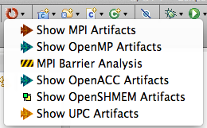
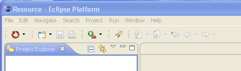
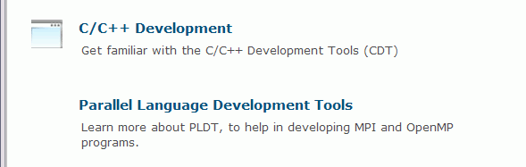

PTP Parallel Language Development Tools
PTP Parallel Language Development Tools
Release 4.0
The PTP Parallel Language Development Tools (PLDT) provide
tools to aid in MPI, OpenMP, UPC Programming and other parallel languages and tools.
PLDT is part of the Parallel Tools Platform.
Features of the PLDT include:
- Analysis of C, C++ and Fortran code to determine the location of artifacts (APIs and other appropriate items in code) for the following parallel programming systems:
- "Artifact View" indicates locations of Artifacts found
in source code
- Navigation to source code location of artifacts
- Content assist via Cntl-Space completes API names
while typing, and fills in arguments too.
- Hover help shows API names, arguments, and descriptions.
- Reference information about APIs via F1 (Cntl-F1 on Linux; Help key on Mac)
- MPI Barrier Analysis detects potential deadlocks in MPI applications,
and shows barrier matches, barrier errors, and paths of all barrier
matching sets. Includes detections across multiple functions and source files.
- OpenMP problems view of common errors, OpenMP "show #pragma region" action,
OpenMP "Show Concurrency" action.
- CDT "New C Project" wizard includes a wizard page that can
automatically add in the include paths etc. for MPI and OpenMP projects.
(CDT 7.0 now includes some new project wizards for UPC as well.)
- New project wizard can include sample MPI and OpenMP source files
and set up the projects to save time.
- Welcome pages introduce new Eclipse users to PLDT.
- Single-menu UI for PLDT analysis features simplifies the editor toolbar.

See also New and Noteworthy - what's new in PLDT 4.0
Pre-requisites:
PLDT 4.0 requires the base Eclipse platform, the CDT, and MPI and/or OpenMP.
- Eclipse platform: Version 3.6 (Helios)
- CDT:
Version 7.0 or later for C/C++ files. (Wherever CDT is mentioned, Photran projects and files,
for C/C++, if based on Eclipse 3.6/CDT 7.0 or later, should also work, but not much testing has yet been done.)
- MPI:
Get MPI and its header file, a version that runs on
your system (e.g. OpenMPI for Linux/Mac; MPICH2 for win32).
(Actually, header file is now optional for MPI artifact identification. See preferences page.)
- Make sure it's in your path
- You may need to install it in a directory such that there are no spaces in the path
(that is, not in 'Program Files' etc.)
- OpenMP:
The PTP PLDT OpenMP tools also need the OpenMP header file.
- UPC:
Header file is now optional for UPC artifact identification.
- LAPI:
Header file required
Note that running MPI or OpenMP (or UPC, or LAPI) is not really required for the PLDT
to function and provide analysis and help with parallel development.
Just the header files are required (in some cases these are now optional) in order to know which "artifacts" should
be located.
To run the core part of PTP (Parallel Tools Platform, http://eclipse.org/ptp,
to run and debug parallel programs on the local machine), you need whatever runtime it requires. Currently
(4.0, June 2010) this includes OpenMPI, which is available for Linux and Mac Only, but via PTP Remote Tools and/or RDT (Remote Development Tools),
other systems can be accessed remotely, and don't need to be installed on the same machine where Eclipse is installed.
For PLDT, a runtime system is not required, and PLDT will work (e.g. for development and analysis only) on Windows as well.
Miscellaneous Topics
Misplaced icon?
Note: if, after installing PLDT, the PLDT menu icon is misplaced over on the left side
of the Eclipse toolbar:

You can put it in its proper place by selecting Window > Reset Perspective.
Eclipse Welcome page includes pointers to information for PLDT.

Tracing in PLDT
Tracing is enabled for some parts of PLDT. See tracing instructions for how to turn this on.
Back to Top | Back to Table of Contents